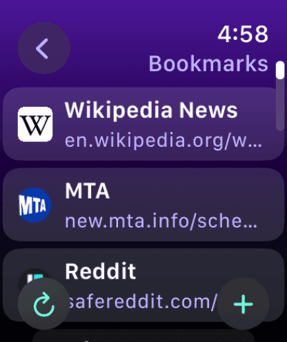
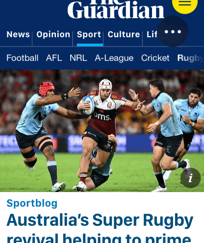
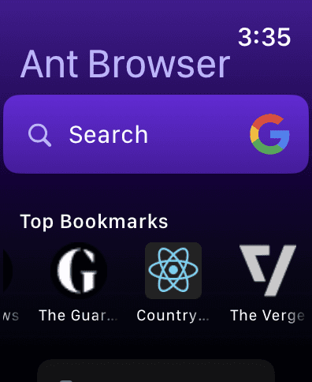
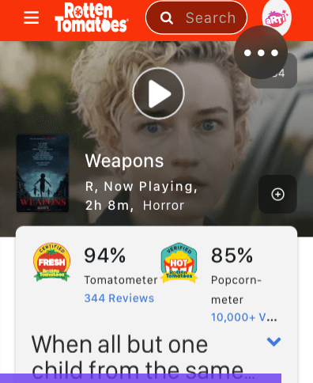
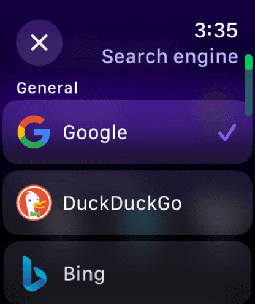

The web
wrist-sized






The first Watch browser to display websites full screen!
Download AntThe first Watch browser to display websites full screen!
Download Ant
Ant Browser is a lightweight web browser for your Apple Watch.
Designed for quick searches and essential information without the need to pull out your phone.
For those moments when you need answers on the go but don't want the distraction of your phone.
Perfect for checking facts, prices, or quick news updates.
Yes! You can enjoy some free searches a day for free.
Want to browse more? Unlock limitless browsing for the price of one coffee—forever! I dislike subscriptions too!
Yes, with an internet connection, Ant Browser works independently on your watch.
Perfect for those out there using the watch as their main device!